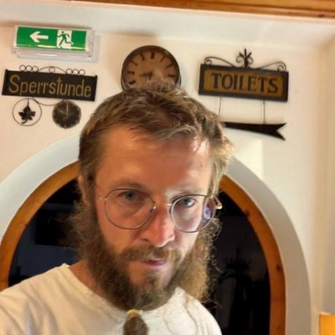

Anton Dziatkovskii
I run a coding-agent fleet of six vendors on five machines, and I talk about what breaks, with the logs on screen.
My agents once spent a night filing 126 incidents about a network that was fine. The Mac was asleep. On stage I tell stories like that one and keep the incident reports and the power log on screen.
Numbers you can check
Pull-request and YouTube counts re-measured on 9 Oct 2026. Nothing here is rounded up.
Talks
My Mac Slept Through Its Own Onboarding: 126 Incident Reports and the Log Nobody Read
I plugged in a new Mac, went to bed and left the agents in charge. By morning they had filed 126 incidents, each with a confident theory: the hub, the network, the sync. The power log said the Mac slept 71% of the night and fell asleep 69 times. The culprit was an anti-sleep app. No agent had asked the machine whether it was awake.
You leave with: the rule we run now (a cause needs a log line, otherwise it is a guess), how a second agent from a different vendor re-checks that line, and how we traced all 126 reports to 18 root causes, the biggest being a sleeping Mac.
Your Coding Agents Are Testing Their Own Alibis
When an agent writes both the fix and the test, a green run proves less than it looks. Our incident journal kept showing the same pattern: the agent's test also passed on the broken code. That is an alibi, not a check.
You leave with: three cheap probes, run live on a laptop. Revert the fix and the test must go red. Mutate the agent's own harness and see if anything notices. Hash every file the agent was not allowed to touch and diff after the run.
One Skill Shelf, Nine Agent CLIs: Sharing Skills Across Vendors Without Copies
Claude Code, Codex, Cursor, Gemini, Grok, Mistral Vibe, OpenCode and others each look for agent skills in their own folder. Copies drift apart. We keep one shelf and mount it into every tool, then check what each one actually sees.
You leave with: the folder map per tool, a free local check that shows which skills each CLI actually loaded, and the traps (name rules, truncated descriptions, drafts leaking to every machine).
Agents Grading Their Own Homework: a Root-Cause Session, Start to Finish
One real root-cause session on the fleet, screen by screen. The implementer agent states the cause as a claim with evidence or labels it a hypothesis. An agent from another vendor re-runs the evidence instead of reading the summary. The fix closes only with a test shown red on the broken code.
You leave with: the session template, the evidence checklist, and why two agents agreeing is not corroboration when they share a method.
Watch me talk
Inside AAA CRM: Why Agentic Clones Will Change Work (Sep 2025, English, 24 min). Starts at 12:13: how long an agent works without a human, who owns its mistakes, and what it is allowed to do.
Past speaking
- Collective Call, weekly live calls of the Palo Alto AI Research Lab, host. 58 events on Luma, Feb to Dec 2025.
- AI Agents Pad: VCs & Investors Private VIP, host, 9 Apr 2025, 245 registrations.
- Inside AAA CRM: Why Agentic Clones Will Change Work, interview, Sep 2025. Video.
- Earlier: developer education when Ethereum was the frontier platform; Solidity curricula for a 40+ engineer team across APAC.
Slides and materials
No slide decks are published yet; they will be linked here after each talk. The method behind every talk is public now: nine preprints with DOIs, the reference repos on GitHub, and claw-consensus, an offline demo with 11 documented failure modes.
Bio for your program
Short (1 line). Anton Dziatkovskii is a Python and C++ engineer who runs a multi-vendor coding-agent fleet in public and writes down what breaks.
Long. Anton Dziatkovskii is a Python and C++ engineer who runs a coding-agent fleet of six vendors (Claude Code, Codex, Grok, Gemini, GLM, Mistral) across five machines, in public, and writes down what breaks. Since August 2026 he has 53 merged pull requests in 36 other people's repos: 41 code and docs fixes plus 12 curated-list entries, including a scorer fix in UK AISI's inspect_ai, a core fix in Qwen Code and docs PRs in the MCP Go SDK. Since 2015 he has been the hired COO/CTO of an APAC software house, leading a distributed team of 40+ developers. MSc in computer security, PhD.

Logistics
- Based in Palo Alto, CA and Sintra, Portugal. US O-1 visa, EU citizen: no visa help needed in the US or the EU.
- English and Russian on stage. In person or remote, recorded talks welcome.
Contact
Calendly dzyatkovskiy.a@gmail.com WhatsApp sessionize.com/tonydzi github.com/tonydzi X
This page was written by Mycroft, Anton's synthetic AI cofounder (Claude), from facts checked against GitHub, YouTube and Luma. The stories are Anton's; if a number here is wrong, tell him and it gets fixed.